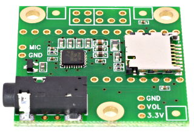
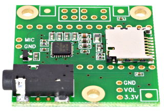
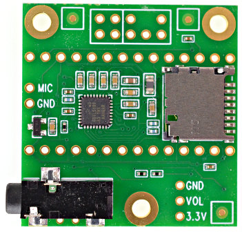

Lecture 1: Programming Environment Setup
We'll be using the Teensy 4.0 microcontroller platform throughout this course. The goal of this first session is to teach you how to program the Teensy from your own computer.
The Teensy 4.0 and Audio Shield
When combined together, the Teensy 4.0 and its companion audio adapter (see figure below) constitute a great platform for embedded real-time audio signal processing providing a stereo audio input and output, interfacing possibilities with sensors, etc.
 

The Teensy 4.0 is a microcontroller-based development board developed by PJRC. As an open source environment, tons of useful information can be found on their website: https://www.pjrc.com. The Teensy 4.0 is based on a powerful ARM Cortex-M7 microcontroller providing plenty of computational power (600 MHz with a Floating Point Unit - FPU) for real-time audio DSP (Digital Signal Processing) and many GPIOs (General Purpose Inputs and Outputs) for interfacing, etc. The CPU performances are many times faster than typical 32 bit microcontrollers. The FPU performs 32 bit float and 64 bit double precision math directly in hardware. DSP extension instructions accelerate signal processing, filters, Fourier transform, etc. The Teensy Audio library automatically makes use of these DSP instructions.

Teensy performance from Core Benchmarks
This pinout reference card comes with the Teensy 4.0 and should be part of your kit (do not loose it!).
IMPORTANT: The pins are not 5V tolerant. Do not drive any digital pin higher than 3.3V.


The Teensy 4.0 has a total of 40 input/output signal pins. 24 are easily accessible when used with a solderless breadboard. The available pins include general purpose IO (i.e., GPIO, digital or analog), as well as integrated serial protocols (i.e., I2C, I2S, CAN, SPI, and UART protocols) that are used to connect to other devices.
In this course, we use the audio adaptor board provided by PJRC that integrates a low power stereo audio codec (NXP Semiconductors SGTL5000 codec) and a SD card reader.


The audio codec connects to Teensy using 7 signals (Yellow signal in pin map above) which are used by two protocols: I2C and I2S. This is a traditional configuration for audio codecs: the I2C (or I²C: Inter-Integrated Circuit) protocol is used to configure the codec (i.e., sample rate, input and output pins, etc.) and the I2S (or I²S: Inter-IC Sound) is used to transfer samples bit by bit in both direction (i.e., from and to the teensy). The I2C pins SDA and SCL are used to control the chip and adjust parameters. Audio data uses I2S signals, TX (to headphones and/or line out) and RX (from line in or mic), and 3 clocks, LRCLK (44.1 kHz), BCLK (1.41 MHz) and MCLK (11.29 MHz). All 3 clocks are created by Teensy which means that the SGTL5000 operates in "slave mode."
The schematics of the audio shield board, rev. D, can bee seen here and the schematic of the Teensy 4.0 can be seen at the end of this page: https://www.pjrc.com/store/teensy40.html. Of course, as they are both made by PJRC, they are designed to be compatible.
The USB connector of the Teensy can support many serial communication from the host computer to the Teensy: (i.e., JTAG for flashing/programming, Serial UART, midi, mouse, etc. see Tools -> USB Type menu in arduino IDE). In this course, the USB connector is used to program the device (i.e., download binary code into flash memory) and ascii communication between the host and the Teensy (i.e., using UART/Serial communicatino protocol). In linux machines, when the teensy USB cable is connected, the serial port will appear as /dev/ttyACM0.
The Teensy 4.0 has 2 Mbyte of flash memory intended for storing your code. 1Mbyte of memory is available for execution (i.e., for variables and data storing during execution). Half of this memory (RAM1) is accessed as tightly coupled memory for maximum performance. The other half (RAM2) is optimized for access by DMA. Normally large arrays & data buffers are placed in RAM2, to save the ultra-fast RAM1 for normal variables. The mapping of variables to memories is indicated at the variables declaration by compiler directive (such as DMAMEM for variable in RAM2 or FASTRUN for variable in RAM1, see here).
The Teensy Development Framework: teensyduino
The Teensy can be programmed in many ways:
- The Arduino IDE software with the Teensyduino add-on is the primary programming environment for the Teensy;
- Visual Micro;
- PlatformIO;
- Makefiles: type
makein directory$(arduino)/hardware/teensy/avr/cores/teensy4/.
In this course, we will be using the Arduino IDE with Teensyduino (but feel free to use any environment). In general, programming the Teensy amounts to compile an application to an executable (main.elf usually) and then download the application on the Teensy which is connected through its USB interface to your PC.
Installing teensyduino
Teensyduino can be installed on Macintosh, Linux or Windows systems.
The installation procedure can be found on the PJRC website (note that it slightly varies between platforms): https://www.pjrc.com/teensy/td_download.html
After this, clone the SON GitHub repository: https://github.com/inria-emeraude/son
Finally, copy the examples/teensy/libraries/mydsp (which contains a basic audio DSP library prepared for this course) folder from the course repo in $ARDUINOPATH/libraries
Hello World
Write the following program in the programming interface:
void setup() {
Serial.begin(9600);
}
void loop() {
Serial.println("Hello World!");
delay(100);
}
Uploaded it on the Teensy (make sure that the right board and port are selected in Tools).
Open the serial debugger by clicking on the loop on the top right corner of the Arduino IDE.
"Hello World" should be printed every 100ms.
Running an Audio Program
The course repository comes with a series of example audio programs "making sound" on the Teensy. Open https://github.com/inria-emeraude/son/tree/main/examples/teensy/projects/crazy-sine in the Arduino IDE and run this program on your Teensy.
Plug your headphones to the 3.5mm Jack connector on the Audio shield and you should hear a "beautiful" music.